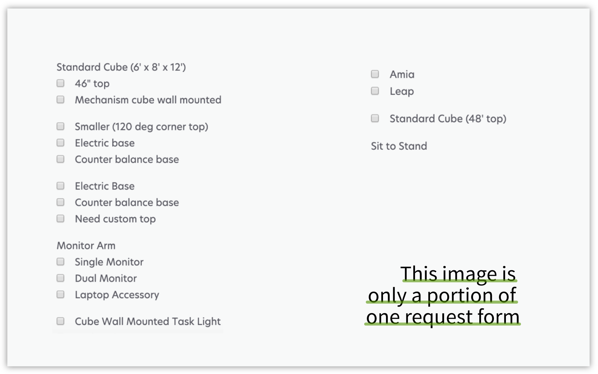

Helping ServiceNow Service Now

OVERVIEW
I redesigned ServiceNow, an internal tool for Lexmark employees to submit request forms for anything they need
CONTRIBUTIONS
PROBLEM
Users were frustrated with ServiceNow and avoided it
SOLUTIONS AT A GLANCE
New information architecture & redesign of 12 request forms
Previous Design
New Design
1. The new design only displays the relevant requests forms for the selected location.
2. The drop down interaction for form selection is replaced with cards that have description for each form.
Previous Design
New Design
1. There are helper texts available for each category.
2. Users are given the option to ask for help when it comes to entering technical information such as dimensions.
3. Errors are prevented whenever possible, such as using radio buttons instead of checkboxes if only one option can be selected.
IMPACT
My design will alleviate the workflow of 5000+ employees

Presented my project to Lexmark and placed 2nd in the "non-engineering" category.

Demonstrated to upper level management that working on internal tools is just as important as working on customer facing products.

Highlighted the importance of UX research to a company that is code first, revise later.
PROCESS
A four phase design process

Phase 1 of 4: Problem Framing
PAIN POINT I
Employees could not accurately and quickly find the forms they were looking for in ServiceNow.
DESIGN OPPORTUNITY
Conduct a card sort and come up with a new information architecture structure that best reflects users' existing mental models.
PAIN POINT II
Employees were unsure if the form they were using was correct.
DESIGN OPPORTUNITY
Give users context and prevent errors whereever possible. Help build users' confidence by making it clear they are taking the correct or wrong steps.
PAIN POINT III
The forms were extensive and pushed users to phone in requests rather than use the existing online system.
DESIGN OPPORTUNITY
Make the online system seem less daunting by redesigning all 10 forms. Make them clear and concise.
BASELINE USABILITY TEST


Employees were failing almost once out of every two attempts to find the right form. The usability tests helped me pinpoint the exact steps in the user flow where users were making errors.
Phase 2 of 4: Exploring
NEW INFORMATION ARCHITECTURE
In the previous design, location selection happened at different points the hierarchy. Often times, employees sifted through multiple forms that did not even pertain to their location when trying to find the right forms. The new design prioritizes location first to cut out any unnecessary searching behaviors.
DESIGN CONCEPT
What I kept in mind while designing

Forms do not always have to display all the information at first load. Make information appear based on what they select in the forms. Keep forms dynamic.

Prevent user error by keeping the information digestible at a glance and limiting user actions (e.g. using radio buttons rather than checkboxes will only allow users to select one option).

Build users' confidence in their decision making processes by giving them context such as helper texts and description. Adding text to a design does not automatically make it more complex.
Phase 3 of 4: Materializing
HIGH FIDELITY PROTOTYPE
Fully functioning prototype on Axure
Phase 4 of 4: Validation
FINAL USABILITY TEST
My design demonstrated a 36% improvement

After the final round of testing which included the same 10 tasks as before but conducted with 10 different employees, I made minor changes to strings to hopefully further increase the 89% success rate. I finished off the project with writing and turning in the documentation for developers.
REFLECTION
What I learned
When attempting a redesign, figure out why the previous designers designed the product in the way they did.
When designing for a company, make sure the visuals for the product stay within company's branding and style guide.
Frequently communicate with developers about specific details of the design rather than relying on them to list all the limitations.
Determined that I want to be a designer and not a researcher. The type of design I enjoy is design research while UX research roles require a different set of skills.
Where to improve
Even if there is an existing style guide, try to be more persuasive about why the visuals should be updated.
Learn how to design for motion. Tackle more visually heavy projects and wove in motion design into interaction design.